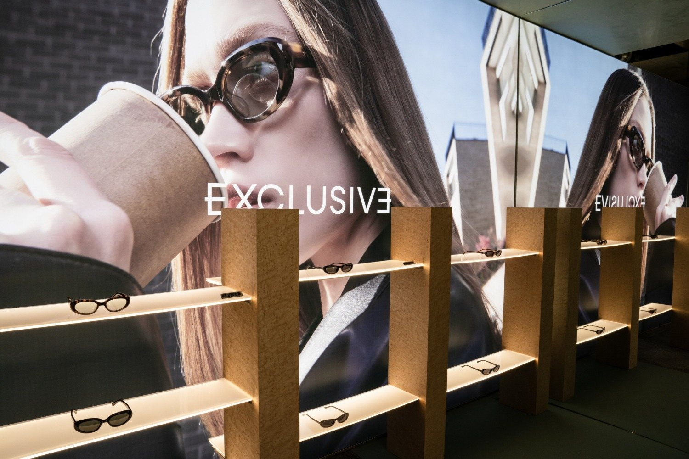

KITH 성수


몇 년째 쓰는 브랜드였다. 밖까지 진하게 퍼진 향에 끌려 들어갔는데, 실내 발향이 너무 세서 시향지도 핸드워시도 아무것도 판별하지 못했다. 5분 만에 빈손으로 나왔다.
화를 내고 끝냈다면 그냥 후기였을 것이다. 대신 날짜 · 장소 · 내용만, 감정어 하나 없이 적고 한 줄의 질문을 남겼다.
“팬이 향을 못 맡게 만들어놓고 — 왜 이렇게 만들었을까?”
넷을 합치면 하나가 남는다. 이 매장은 머무르게 하는 쪽이 아니라 «끌어당겨 빨리 내보내는» 쪽을 골랐다. 향이 센 것도 실수가 아니라, «오래 쓰는 팬»이 아니라 «처음 지나가는 사람»에 맞춘 설계였다.

한 매장만의 선택일 수 있어, 외곽에서 중심 거리(연무장길)까지 열네 구간을 걸었다. 방식만 달랐다 — 현장 줄, 웨이팅 앱, 사전 예약. 한 곳이 아니라 «거리 전체»가 같은 문법으로 돌고 있었다. 반복이 확인돼야 «구조»라 부를 수 있다.
방문객 구성도 눈에 띄었다. 명동이 외국인·전 연령의 관광지라면, 성수는 내국인·젊은 층이 «일부러 찾아오는» 목적지 — 명동의 정확한 반전이었다.

중심 거리가 전부 줄을 세울 때, 외곽의 포어플랜은 정반대였다. 도면 위에 놓인 디저트, 지질학 같은 설명 카드, 접시 위 자재 스와치 — 건축의 문법을 메뉴 · 기물 · 서빙까지 끝까지 밀어붙였다. 세계관이 새는 자리가 한 군데도 없었다.
큰길 가게는 지나가는 사람이, 가장자리 가게는 «세계관»이 먹여 살린다. 중심 거리가 «접근성»을 얻고 «희소함»을 버렸다면, 여긴 그 반대 — 같은 거리에서 나온 정반대의 맞바꿈이다.

입장을 거르는 네 단계를 전부 목격했다. 위로 올라갈수록 우연히 지나가던 방문자가 배제된다.
차별점이 없어서 대기를 시키는 게 아니라, 대기 그 자체를 팔고 있었다. 거부는 적을 만들지만, 대기는 욕망을 만든다. 그리고 전부가 줄을 세우면, 그건 인기가 아니라 «연출»이다.

남는 공간은 미술 설치와 미디어가 채웠다. 처음엔 «과한 연출»로 보였지만 되짚으니 반대였다 — 연출이 아니라, 상품이 작아서 생긴 필연이다. 아이웨어는 부피가 작아 공간이 남고, 단가가 높아 그 공간을 미술로 채운다. 극장식 리테일에 구조적으로 가장 잘 맞는 상품이다.
무대 9 : 상품 1.
“대단하다”가 아니라 “왜 이렇게 될 수밖에 없었나”로 되짚은 대목이다. 감탄은 관광기, 필연의 추적은 분석이다.
사람들은 여기에 —
객체가 되러 온다.

열네 구간을 다 걷고 나니 기시감이 왔다. 성수는 힙한 신생 동네처럼 보이지만, 구조는 낯익었다 — 백화점을 눕혀서 길바닥에 펼쳐 놓은 것이었다. 지붕을 벗기면, 백화점의 장치가 그대로 눕는다. 단 한 칸만 빼고.
넷은 형태만 바꿔 그대로 눕는데 «쉼» 한 칸만 비었다. 필지마다 주인이 달라 손님이 머물러도 «내 평수» 매출이 아니니, 휴식이 건물 밖으로 밀렸다. 성수는 휴식을 수출하고, 피로를 수입한다 — 내가 27℃ 고습에서 쌓은 피로는 컨디션이 아니라 구조의 산출물이었다.


성수에 이미 들어온 브랜드 경험 매장들. 직원은 판매원보다 «전시 안내자»에 가깝고, 애플의 «Today at Apple»은 판매대를 교실로 바꿨다. 리테일 노동이 «상품을 파는 일»에서 «경험을 설계하고 안내하는 일»로 옮겨가는 흐름이다 — 공간 기획 · 브랜드 경험(BX) · 팝업 기획 같은, 십 년 전엔 없던 자리가 공고에 생긴다.

스냅샷은 «지금»까지만 말한다. 방향을 읽으려면 같은 길을 한 세대 먼저 간 동네를 봐야 한다 — 도쿄 다이칸야마, 같은 «저층 · 디자인 주도» 창의지구다. 랜드마크 힐사이드 테라스는 30년에 걸쳐 지어졌고(성수가 «빨리 뜬» 것과 정반대), 츠타야 T-SITE는 책이 아니라 «머무는 경험»을 판다.
성수의 체험형 매장이 향하는 완성형이자, 거기서 열리고 닫히는 자리를 미리 보여준다. 임대료가 오르고 날것이 빠지고 큐레이션이 촘촘해지는 게 성수의 «다음»으로 유력하다.
※ «다음»과 «직무 이동»은 관찰이 아니라 선례로 읽은 추론이다 — 확인한 것과 추측한 것을 섞지 않는다.
이 눈은 회사에도,
무엇보다 내 방향(진로)에도 댄다
이 문서가 증명한 건 성수가 아니라 «눈»이다. 성수에 던진 질문은, 문장 하나 바꾸지 않고 회사에 그대로 들어간다.
매장의 평수가 그 매장의 우선순위를 말하듯 — 채용공고가 그 회사의 우선순위를 말한다. 다만 회사 읽기 자체가 방향을 주진 않는다. «내가 어느 쪽에 끌리는가»(포어플랜 vs 중심 거리)와 «시장이 어디로 가는가»(§8)가 만나 방향이 서고, 회사 읽기는 그 방향을 «겨누는» 도구다. 진로가 먼저, 취업이 그다음이다.